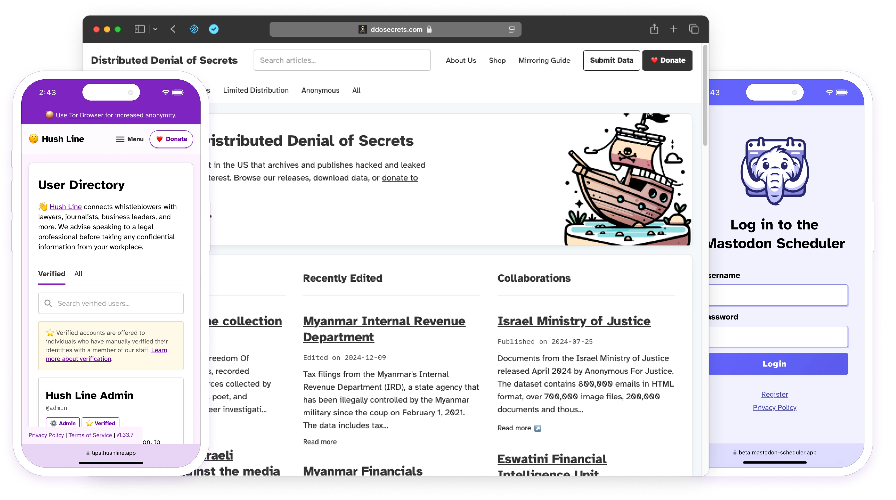

We build tools for transparency and free access to information.
Science & Design, Inc. is a 501(c)(3) product development non-profit in the United States building free and open-source software and services for journalists, lawyers, educators, and more.
Our Users
Journalists & Newsrooms
Educators & School Administrators
Organizers & Activists
Recent Work
Hush Line
SaaS and PaaS anonymous reporting for organizations and individuals. The easiest whistleblower reporting platform available.
Go To Hush LineFrontpage
The platform powering Distributed Denial of Secrets consumer-facing app. High-volume, editorial interface for publishing hacked and leaked data serving the public's interest.
Go To DDoSecretsMastodon Scheduler
A tool for Fediverse users to scheduler their posts, allowing better planning and preparation of social content.
Go To Mastodon SchedulerBoard of Directors
Elijah Waxwing
Elijah is the co-founder of Riseup.net, the LEAP Encryption Access Project, and Thoughtworks. He's been working on the issue of digital justice, autonomous infrastructure, and surveillance of social movements since 2000. Elijah is a software developer, systems architect, information security specialist, and manager.
MastodonGlenn Sorrentino
Glenn is the founder and Executive Director of Science & Design and serves on the Board of Advisors to Distributed Denial of Secrets. In his most recent role as Principal Product Designer at Salesforce, he led the design for products including Search, Voice, Identity, and Authentication. His work has been awarded multiple US patents, and invitations to collaborate with institutions like Harvard's Belfer Center and the World Economic Forum.
LinkedInMicah Lee
Micah is a cofounder of Freedom of the Press Foundation, serves on the board of Distributed Denial of Secrets and OpenArchive, and is the Director of Information Security at The Intercept. He is a computer security engineer and an open-source software developer who writes about technical topics like digital and operational security, encryption tools, whistleblowing, and hacking using language that everyone can understand without dumbing it down. In addition, he develops security and privacy tools such as OnionShare, Dangerzone, and Semiphemeral.
WebsiteSerene
Serene is a software engineer, ex-hacker, and the creator of the Snowflake pluggable transport. Away from the computer, she is a concert pianist who concertizes around the world.
WebsiteStefanie Daehler
Stefanie is a librarian and educator, holding a Masters of Library and Information Sciences from Pratt and a BA from Cornell. Her experience includes Penguin Publishing, The NYC Department of Education, and leadership at The Archer School for Girls.
LinkedIn👋
Contact Us
Thank you for stopping by! Science & Design, Inc., a 501(c)(3) non-profit in the US building free and open-source software and services making a positive impact across industries. Get it touch using one of the channels below!